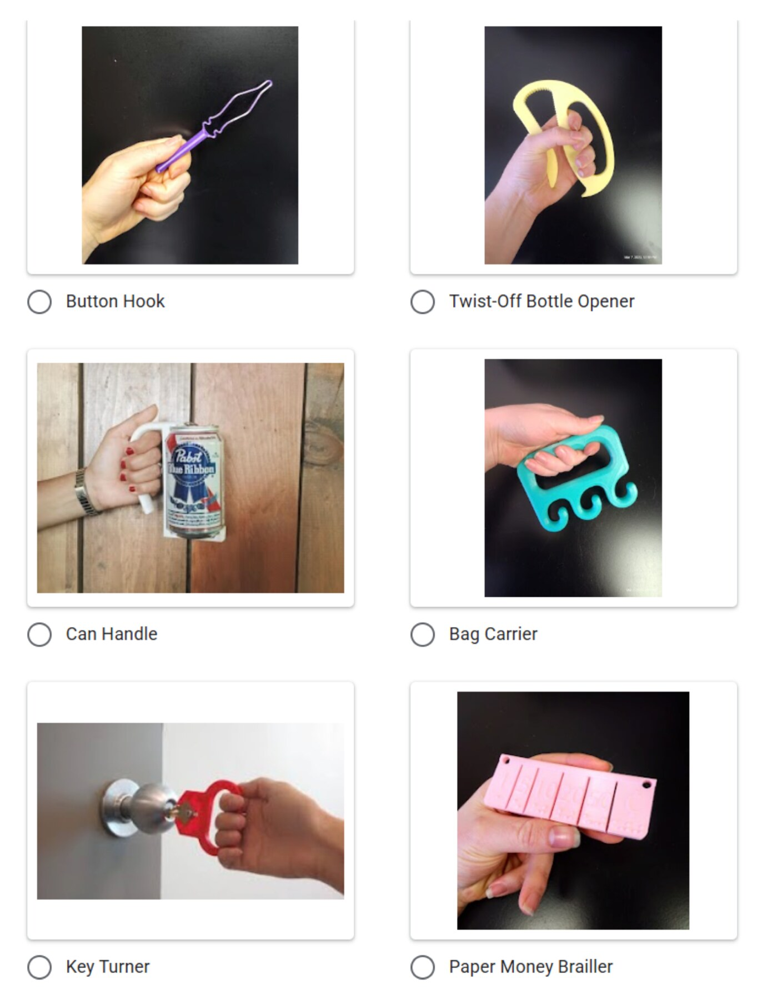
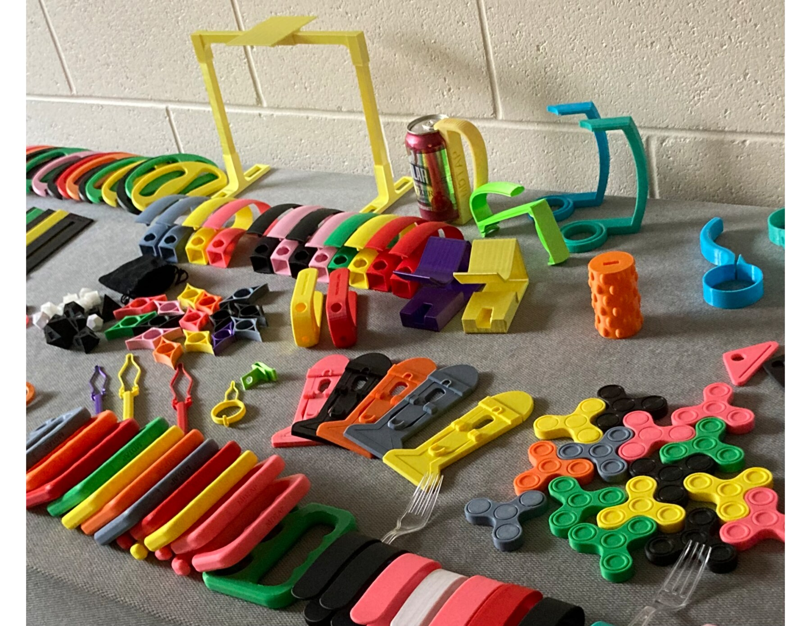

Small devices supported everyday independence.
Recipients used simple tools such as jar openers, bag carriers, and page holders in daily routines, work, and community life.
First author · Lead researcher · ASSETS 2025
How a public agency and university makerspace built the infrastructure to distribute free, practical 3D-printed assistive devices—and how recipients experienced the program.

Challenge
Low-cost assistive devices can address everyday needs that commercial products and insurance do not cover. Scaling them required coordinated production, fulfillment, quality control, outreach, and trust across university and government partners.
Study focus
How did recipients use and experience these devices in everyday life?
Which program touchpoints helped—or prevented—people from discovering, requesting, and trusting the service?
Research approach
Interviews captured experiences that administrative records could not: how devices fit daily routines, how people found the service, and where the request-to-delivery journey broke down.

Key insights
Recipients used simple tools such as jar openers, bag carriers, and page holders in daily routines, work, and community life.
Positive experiences encouraged people to recommend the program and help others request devices independently.
People struggled to relocate the request form or misunderstood eligibility, showing that outreach is part of service design.
Outcome
During the documented period, the university produced 210 devices to extend state capacity; follow-up survey data showed 90.51% high satisfaction.